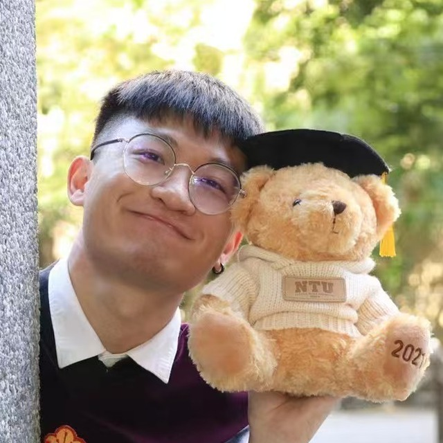

About
“Build systems that are useful, reliable, and easy to improve.”

Hi there, I am Shengkai Huang, a Software Engineer / Software Development Engineer in Test (SDET) based in Toronto, Canada.
I focus on full-stack application engineering and test automation architecture, with an emphasis on building reliable user interfaces, maintainable backend services, and scalable quality workflows.
Outside work, I like finding quiet trails, carrying a camera, and keeping small memories from ordinary days.